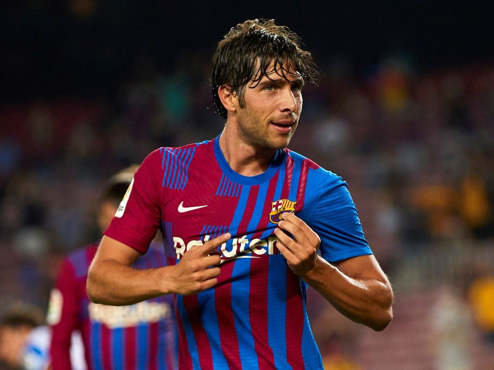

DERBY
Un partido especial para Sergio
Con el cambio de formato de la Supercopa, que se llevó a cabo hace tres años, el Barça nunca ha logrado este título, ya que quedó fuera en semifinales dos veces y perdió una final. Por tanto, este año toca ir con todo para conseguir el primer título de la era Xavi. La convocatoria entera la forman los siguientes 24 jugadores, pero antes de cada partido Xavi tendrá que descartar a dos: Ter Stegen, Bellerín, Araujo, Sergio, Dembélé, Pedri, Lewandowski, Ansu Fati, Ferran, Iñaki Peña, Memphis, Christensen, Marcos Alonso, Jordi Alba, Kessie, S. Roberto, De Jong, Raphinha, Kounde, Eric, Balde, Gavi, Pablo Torre y Arnau Tenas. De todos los convocados, uno vivirá la semifinal de una manera más especial. Es Sergio Busquets, que suma 699 compromisos oficiales con el primer equipo azulgrana y podría pasar a formar parte del selecto Club de los jugadores con 700 partidos o más, únicamente formado por Leo Messi y Xavi Hernández.

"Será un partido muy disputado"
Sergi Roberto ha hablado también sobre el rival del Barça en las semifinales, el Betis, un equipo "que lleva tiempo apostando por un buen fútbol": "Tiene jugadores con mucha calidad y esperamos un partido abierto, en el que ambos conjuntos querremos tener el control de la pelota. Ojalá dominemos nosotros y ganemos. Será una eliminatoria muy bonita de ver para el aficionado". Además, ha comentado: "Estará muy disputado. Esperamos ganar el primer título desde que Xavi está con nosotros. Él ya sentó las bases cuando llegó y hemos trabajado mucho, pero sí que es cierto que ganar títulos ayuda a que todo vaya mejor. Estamos en el buen camino, sería muy bonito y esta semana la afrontamos con mucha ilusión".
